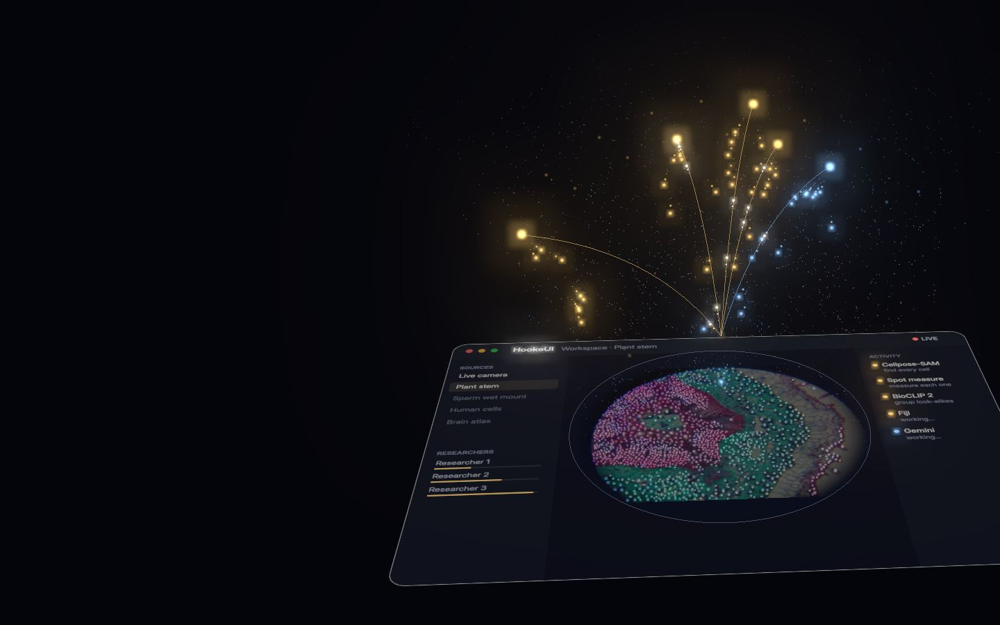
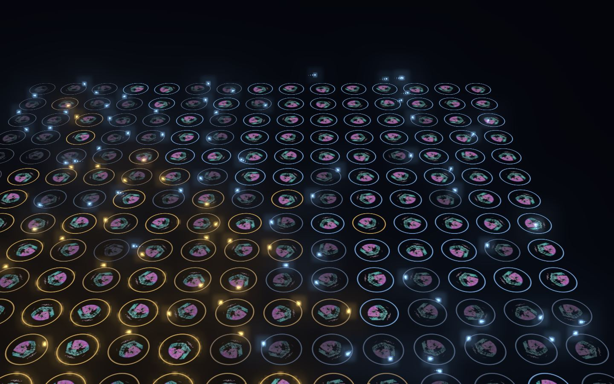
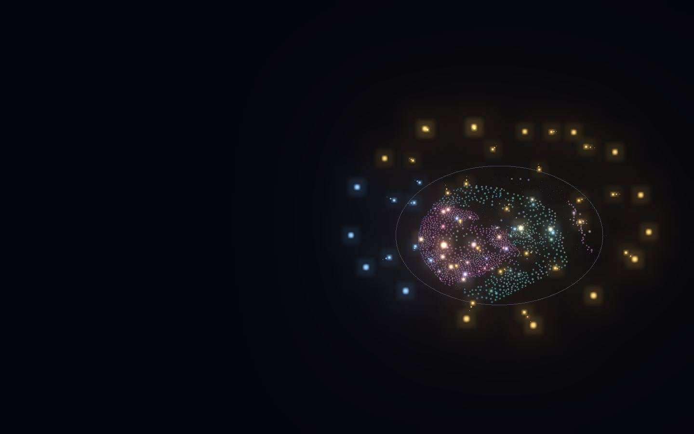

Hooke · open source
Parallel researchers for scientific data.
Stack open-source models across long-horizon tasks, on your Mac and in the cloud at once. For educators, researchers and explorers.
Free, for Macs with Apple silicon and macOS 14 or later.

Run a whole lab in parallel.
Researchers fan out across every specimen in your dataset at once, on your Mac and in the cloud, and keep going on tasks that take hours.

Every model's answer, on the same specimen.
Results line up layer on layer, each named with the model and settings that made it, so anyone can check and repeat them.

The open-source models science runs on, one click away.
Segmentation, tracking, classification and Fiji, beside the best cloud models. Switch them on, stack them, and ask about any spot.
In 1665, Robert Hooke drew a slice of cork and called its little boxes cells.
He published his drawings, so anyone with a lens could look for themselves. We build Hooke in the open for the same reason.
This is a plant stem, today. Cellpose-SAM outlined all 1,523 of its cells in about 20 seconds on a Mac, and the app measured every one. Point at a cell to see what it found.
1,523 cells. Point at one.
-
Free, and yours to change
HookeUI’s own code will be Apache 2.0, with a sign-off on every contribution. The licence is being finalised for the first release.
-
Results anyone can repeat
Every result keeps the model, version and settings that made it. Share a picture and it names them, so anyone can turn on the same ones and look again.
-
Made by the people who use it
Add a model, an example or a fix. Share it as a file, or publish it to the reviewed catalog for everyone. The forum opens with the first release.
Meet your staff.
Behind every name are people who spent years teaching a model to see one thing well. Hooke brings their work a click from your microscope, and names it on every result it helps make.
Models
On your Mac
- Cellpose-SAM Pachitariu, Rariden, Stringer
- micro-sam Archit, Pape et al.
- SAM 3.1 Meta AI
- EdgeTAM Meta Reality Labs
- InstanSeg Goldsborough, Bankhead et al.
- Trackastra Gallusser, Weigert
- DINOv3 Meta AI
- BioCLIP 2 Imageomics Institute
Fiji functions
On your Mac
- Analyze Particles counts and measures particles
- Gaussian Blur smooths an image
- Subtract Background removes an uneven background
Each runs headless in a pinned Fiji, proven to match the same ImageJ macro.
Algorithms
On your Mac
- Bright objects Otsu threshold and connected regions
- Spot measure spots and their sizes
- Spot shape how round each spot is
- brainreg whole-brain registration, BrainGlobe
Cloud models and data
With your key, and on your Mac
- Gemini, GPT, Claude vision and chat
- SAM 3.1 hosted
- Allen mouse brain atlas 25 µm
The sky keeps filling.
When someone adds an entry, everyone gets it as a catalog update, with no new app. Add your own from a BioImage Model Zoo or Hugging Face link, drop in a Cellpose model you trained, or have an AI assistant draft its adapter, tried in a sandbox before you use it. Each entry keeps its own licence, shown before you turn it on. Please cite the ones you use.
Come and look.
Hooke is a signed Mac app for Apple silicon. Install it with Finder; no terminal or developer tools.
The example and the local models need no key. Chat, voice and naming use a cloud provider, with your own key.
- Download Hooke and open the disk image.
- Drag HookeUI into Applications, then open it there.
- Its first launch prepares the app’s Python and packages (about 350 MB, a few minutes), step by step on screen.
- Open the bundled example: a real microscope image, its bright regions found and measured on your Mac.
Installation details and current limits are on the download page. The source code is published on GitHub with the first public release.